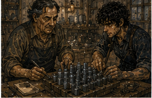

The morning wound check took twelve minutes. I timed it because I was bored. Nerin did not appreciate this.
“Eleven fifty-two.”
“What?”
“From unwrap to rewrap.”
“Why?”
“Data.”
“On what?”
“Your efficiency.”
“Get out.”
The limb was less swollen than last night. Incision dry. No heat. No spreading redness. No new drainage. The dark/questionable margin that had occupied so much of my attention a few days ago was now mostly just part of the healing edge. Still watched. Not gone.
Sera's instruction through Nerin was boring:
Ground-floor activity fine. Use transport. No repeated stairs for entertainment. One controlled ascent later only if swelling remained modest. Wound check tomorrow. I asked whether sitting for two hours counted as activity.
“Yes.”
“Dangerous?”
“No.”
“Useful answer.”
“Depends how you sit.”
“Of course.”
Knee position. Pressure. Shift periodically. Do not let residual limb hang unsupported too long if it increases throbbing. Simple. I could visit Holl. I did not need permission from Sera to think. Apparently I needed instructions for chairs now. Fine. The cart cost two copper. I paid. No protest. Holl had chairs. This improved my opinion of him immediately. Not enough chairs.
One. Still. I took it.
“Morning,” Holl said.
“Morning.”
“You look different.”
“Hair?”
“No.”
“Rude.”
He looked at the crutches. Then at my face.
“Can you work?”
“Not why I'm here.”
“Good. I don't have work.”
Excellent start. His place smelled like stone dust, damp wood, and the faint mineral bitterness I associated with cheap kestrin. Not Pell's workshop. Less metal. More trays. Holl had a long bench against one wall with shallow wooden boxes divided into squares. Pieces of pale gray stone sat in some compartments. Others held brass tags. A balance. A mana bead fixture. Reference tiles.
A little clamp. Nothing dramatic. Commercial. Good. I had hired the cart. Obviously. Morning wound check had been clean enough that Sera allowed normal ground-floor activity and one controlled ascent later if swelling remained modest. No stair practice. No unnecessary walking. Holl was ground floor. I had asked. Chair available. I had asked. Privy behind yard, one shallow threshold. I had asked.
Duration unknown. I had not asked because this was not a job. Progress.
“What do you actually sell?” I asked.
Holl stopped.
“That your greeting now?”
“Yes.”
He wiped his hands.
“Kestrin?”
“Your business.”
“I sort and certify cheap suppression stock for people who don't want to pay for better stone.”
There.
“Certify what?”
“Range.”
“Not exact value.”
“No.”
Good.
“How wide?”
“Depends what they buy.”
He pointed to three trays.

“Lamp shops want one thing. Ward repair crews another. Cheap cabinet lining another.”
“Kestrin in cabinets?”
“Small lockboxes. Not good ones.”
“Why?”
“Because people are cheap.”
Universal force.
“What do they need from the stone?”
“Enough suppression to matter. Not so much variation that one piece behaves like another material entirely.”
“So bands.”
“Yes.”
“What do you measure?”
“Response against reference bead. Recovery after removal. Sometimes repeat exposure if customer pays.”
That last part made my brain move. Do not. General. Holl continued.
“Mostly I buy lots cheap, reject obvious bad pieces, test samples, then sort.”
“Samples or every piece?”
“Depends.”
There.
“What are you trying to make faster?”
He smiled.
“Finally.”
I leaned back. Chair stable. Good.
“Tell me.”
He brought over a tray. Twenty pieces maybe. Thumb-sized to palm-sized.
“Dorrin lot.”
I recognized nothing specific. Good.
“Raw?”
“Sorted raw. Untreated.”
“You treat?”
“Sometimes. Mostly I send treatment out or sell to people who do their own.”
“Bale?”
“Sometimes buys finished sorted stock. Sometimes brings treated stock for checking.”
Known. Good.
“So your fast test problem is raw acceptance?”
“Partly.”
“Treatment adjustment?”
“Not usually mine.”
“Final sorting?”
“Yes.”
Two of three. Good.
“What costs time?”
“Setting each piece. Reading bead. Waiting. Recording. Resetting reference.”
“How long?”
“About half a minute for rough band if stone behaves. Longer if it doesn't settle.”
Half minute. Commercially enormous at volume.
“How many pieces?”
“Lot like this? Hundreds. Bigger, thousands.”
There.
“Every piece?”
“Not usually.”
“Why not?”
“Because then cheap stone stops being cheap.”
Exactly.
“So you sample.”
“Yes.”
“And if sample looks too broad?”
“Reject lot, renegotiate, or sort more deeply.”
“False rejection cost?”
Holl looked at me.
“What?”
“If your quick test says bad lot and lot is actually usable, what does that cost?”
“Money.”
“Useful.”
He rolled eyes.
“Depends price. Sometimes I can buy cheaper because seller wants it gone.”
“False acceptance?”
“Worse.”
“Customer complaint.”
“Or return.”
“Or failure in use.”
“For cheap uses, usually complaint before catastrophe.”
Good. Not high stakes. Mostly.
“So faster test doesn't need exact measurement.”
“No.”
“What decision?”
“Which pile.”
There. Simple.
“Accept. Reject. Test more.”
Holl nodded.
“And for individual pieces?”
“Sell band A, B, C. Reject.”
Classification. Not exact property.
“How many bands?”
“Usually three.”
“Why three?”
“Because four doesn't pay.”
Excellent. I laughed. He looked pleased. There. Economics. Not physics.
“What have you tried?”
Holl brought out a brass frame. Two reference tiles fixed at opposite ends. Mana bead suspended in middle. A sliding tray beneath.
“You move piece under. Compare bead displacement against references.”
“Simultaneous?”
“Nearly.”
“Faster than reset?”
“Yes.”
“Problem?”
“Geometry.”
Of course.
“Piece size changes distance.”
“Yes.”
“Shape.”
“Yes.”
“Moisture.”
“Yes.”
“Position.”
“Yes.”
“Operator.”
“Yes.”
“Temperature?”
“Less than you think at this rough level.”
Good.
“What do you need?”
“Something a worker can use without me.”
There. Not fastest possible. Transferable.
“Training time?”
“An hour, maybe two.”
“Decision error?”
“I'd tolerate one band wrong sometimes. Not reject good as bad too often. Definitely not sell weak as strong too often.”
Asymmetric errors. Good.
“So false acceptance worse than false rejection.”
“For upper band, yes.”
“Could bias thresholds.”
“Yes.”
He had thought of it. Competent.
“Why haven't you?”
“Because the bead reading drifts with piece position enough that biasing threshold doesn't fix operator inconsistency.”
There. Actual problem. I leaned forward. My residual limb bumped chair edge. Pain. I stopped. Adjusted. Holl waited. No comment. Good.
“Can you constrain position?”
“Pieces aren't same shape.”
“Constrain one surface?”
“Which surface?”
“Exactly.”
He smiled.
“That's where I got.”
Good.
“What about mass?”
“Correlates badly.”
“Thickness?”
“Better. Still not enough.”
“Volume?”
“Too slow.”
“Water displacement?”
“Wet stone changes behavior.”
“Right.”
He had tried. Good.
“Destructive?”
“For raw acceptance, maybe.”
Holl nodded slowly.
“I can break samples.”
“There.”
“For final sorting, no.”
“Different tests.”
“Yes.”
This was the thing. One faster cheap test might be wrong question.
“What if raw acceptance uses destructive sample test and final sorting uses rough nondestructive banding?”
“That is already two tools.”
“Yes.”
“I asked for one.”
“Why?”
“Cheap.”
Fair.
“Could one fixture have two modes?”
“More parts.”
“Still maybe cheaper than labor.”
“Maybe.”
There. Maybe. I looked at the brass frame. Not touching.
“Can I?”
Holl handed it over. Good. I held frame on my lap. Light enough. The sliding tray had side rails. Reference tiles fixed. Mana bead hung from a small arch.
“Why slide piece?”
“So bead stays fixed.”
“Good.”
“Thank you.”
“Why flat tray?”
“Because stone sits on things.”
“Shape changes height.”
“Yes.”
“What if reference is not absolute position?”
Holl looked.
“Meaning?”
I did not know yet. Danger. Fine.
“If operator doesn't read bead displacement directly. If operator only asks whether it crosses a mark.”
“I tried marks.”
“On bead path?”
“Yes.”
“Still position drift.”
Right.
“What if you deliberately exaggerate difference?”
“How?”
There. I thought. Barrier? No. Magic design? Maybe. No casting. Also Holl's tool. Could use two references bracketing threshold. Already.
“Could make the test answer one threshold at a time.”
Holl frowned.
“Instead of three bands at once?”
“Yes. First pass: strong enough for upper? Second: strong enough for middle? But then more passes.”
“Slower.”
“Unless first pass removes most.”
“Lot distribution matters.”
“Yes.”
He had records.
“What's typical distribution?”
“Depends lot.”
“Of course.”
He pulled ledger. Good. Not secret. Commercial. We looked. Recent lots. Rough percentages. Some mostly middle. Some broad. One mostly weak. One tight around middle. Interesting. Do not think seized. Too late. Internal narrowness. No. Different. Ordinary commercial lots could sometimes be tight. Not nearly same issue. Stay.
“If most pieces middle, threshold sequence could reduce passes.”
Holl said, “Weak versus usable first.”
“Then upper among usable.”
“Yes.”
“Two binary decisions.”
“Instead of one three-band reading.”
“Could be easier for operator.”
“Maybe.”
There. We both stared at fixture. No revelation. Good.
“How do you set threshold?”
“Reference tile.”
“One?”
“For each.”
“Could physically swap reference.”
“Yes.”
“Worker doesn't interpret magnitude. Only left/right of reference.”
“That's what I want.”
“Then why bead in middle?”
Holl looked offended.
“Because it shows response.”
“I know. Could make response comparative mechanically.”
“Magic isn't mechanical.”
“No, but display can be.”
“How?”
I did not know. Good.
“Maybe two beads.”
He stopped.
“Same ambient?”
“Same fixture.”
“One reference stone, one test stone?”
“Yes.”
“Compare beads.”
“Operator asks which moves more.”
“Beads vary.”
“Matched pair?”
“Cost.”
“Calibration.”
“Cost.”
“Still.”
Holl took frame back. He was thinking. Good.
“Two channels also interact.”
“Maybe.”
“Could shield.”
“With what?”
“Kestrin.”
We both laughed. That was stupid. Maybe not. No.
“Metal divider?”
“Mana field doesn't care about thin brass enough.”
“Distance.”
“Bigger fixture.”
“Cost.”
There. Tradeoffs. Good. No miracle. Holl put frame down.
“What did you come here for?”
I looked at him.
“This.”
“No. Why now?”
Ah.
“Edrin reminded me of testing.”
Careful. True. Not details.
“What testing?”
“General.”
He stared.
“Guild?”
“Yes.”
Also true.
“Can't say?”
“No.”
Good. Holl nodded. No pressure.
“Fine.”
Boundary survived. My brain immediately wanted to ask whether he had ever seen extremely narrow commercial lots. Could. General? Maybe. Dangerously close. Do not. Not necessary for Holl's problem. I did not ask. That was harder than expected.
“Your faster test,” I said. “What would success actually be?”
Holl thought.
“Worker sorts twice as much in a day with no meaningful increase in customer returns.”
There. Excellent.
“That's better than faster.”
“Yes.”
“Do you track returns by band?”
“Yes.”
“By worker?”
He paused.
“Not consistently.”
There.
“Start.”
He frowned.
“That doesn't make test faster.”
“No. Tells you whether operator is actually problem.”
“I know operator is problem.”
“Which operator?”
He looked at me.
“Fuck.”
Good.
“Maybe fixture drift. Maybe training. Maybe one worker. Maybe all.”
“I have three people.”
“Then cheap experiment.”
He was already reaching for ledger. Good.
“Don't redesign tool yet.”
He looked at me.
“Who are you?”
“Recovering.”
“Badly.”
“Medium.”
He pulled another ledger. Worker marks existed on some batches. Not all. Enough to start maybe. We spent twenty minutes reconstructing three recent lots. Not perfect. One worker had more upper-band returns. Maybe. Small sample. Another worked slower but fewer returns. Third almost no data. No conclusion. Good.
“Need prospective record,” Holl said.
“Yes.”
“Same lot split between workers.”
“Better.”
“Same fixture?”
“If you want operator.”
“Different fixtures if you want fixture.”
“I have one.”
“Convenient.”
He glared. I smiled. This was fun. I forgot my leg. Actually. For maybe ten minutes. Then I stood. Or tried. Both hands went toward table. Crutches were against wall. Right. Holl caught one before it fell.
“Sit.”
“I am leaving.”
“Then use sticks.”
“Crutches.”
“Fancy sticks.”
I hated him. I retrieved them. Standing took more effort than arrival. Shoulders tired. Right thigh okay. Residual limb aching from sitting too long with knee bent. Different problem.
“How long was I here?”
Holl looked at clock.
“Two hours.”
Fuck.
“Thought one.”
“You talk.”
“My shop.”
Fair.
“Chair helped?”
“Yes.”
“Good.”
There it was. I pointed. He looked confused. Fine.
“Pay?”
Holl asked.
“What?”
“You did useful work.”
“No.”
“No?”
“I came because you invited testing conversation.”
“And you spent two hours.”
“Not contracted.”
He considered.
“Food?”
“Yes.”
He handed me two small meat pies from shelf. Cold.
“Consulting fee.”
“That is not a fee.”
“Then don't eat them.”
I put both in coat pocket. Carrying solved.
“Thank you.”
“Come back after I have records.”
There. Not schedule.
“Ask me.”
He smiled.
“Don't reserve it?”
Fuck. Carrow.
“Yes.”
*
Before I left, Holl made me watch one of his workers use the current fixture. Her name was Iris. Maybe twenty-five. Short hair. Stone dust on both sleeves. She had clearly done this more than I had. Good.
Holl gave her ten pieces from a tray and said nothing else. She slid first piece beneath bead. Waited. Compared. Brass tag into middle box. Second. Upper. Third. She rotated it once before testing.
“Why?”
I asked.
“Flat side.”
There. Operator already compensating.
“Always same side?”
“No. Flattest.”
Subjective. Good. Fourth piece rocked. She wedged a tiny wood chip under one edge. I looked at Holl. He looked at me. Exactly. Position problem. Iris tested. Middle. Fifth. Weak. Sixth. She frowned. Retested after wiping tray. Different result.
“Dust?” I asked.
“Maybe.”
“Maybe?”
Iris shrugged.
“Could've sat wrong first time.”
There. Fixture. Operator. Surface. Dust. No single variable. Good.
“How long have you done this?”
“Eight months.”
“Fast?”
“Faster than him.”
She pointed at Holl. Holl looked offended.
“More accurate?”
“Depends who asks.”
Excellent.
“What would make this easier?”
I asked. Iris answered immediately.
“Stop making me decide close ones.”
There. Not faster. Decision burden.
“What do you do now?”
“Put aside.”
“How many?”
“Bad lot, many. Good lot, few.”
“Then Holl retests?”
“Yes.”
Holl nodded.
“That pile is my time.”
Ah. Fast worker sorting could shift ambiguous cases to expert. Two-stage system already existed informally.
“What if tool only made obvious cases faster and left close ones for you?”
Holl looked.
“That is what it does now.”
“No. Worker still spends time deciding whether close.”
Iris nodded.
“True.”
“Could mark an uncertainty zone.”
Holl frowned.
“Then more pieces come to me.”
“Maybe. But worker throughput rises.”
“My throughput falls.”
“Total system.”
There. He hated phrase. Good.
“How many ambiguous?”
“Track it,” I said.
Iris said, “Please.” Holl glared at both of us. Excellent. No invention. Measurement first. I liked Iris. Not enough to make her recurring. She returned to work. Holl said, “You are expensive in notebooks.”
“You paid me in pie.”
“Exactly.”
The cart ride back was excellent because I sat. This was now an opinion I held strongly. My arms had done enough. Holl's problem moved in my head. Not sinkstone. Mostly. Binary thresholds. Operator variation. Commercial error asymmetry.
Throughput measured as usable correct sorting per labor day, not seconds per piece. Good. Edrin's problem sat adjacent. Measurement and selection. Could faster sorting explain narrow batches? Maybe. No. Do not infer from existence of generic sorting problem to seized chain. Different evidence. I knew that. My brain did not care. I wrote nothing in cart. Also progress.
*
At lodging, the keeper had put my current notebook on kitchen table.
“How?”
“You left it.”
“I had it.”
“You had the small one.”
Right. Two notebooks. Bad system. I ate one meat pie. Cold. Good.
“Work?”
keeper asked.
“No.”
“You got paid in pie.”
“Not work.”
“Sounds like work.”
“It was consultation.”
She stared. I stopped. Oh. That word. Maybe. No. Not profession. Not job. Conversation.
“Pie.”
“Fine.”
She took half of second pie. Theft.
*
Sera's note allowed one controlled ascent if swelling remained modest. It was not modest. Not terrible. More than morning. Two hours sitting plus crutches plus travel. No. I did not attempt stairs. No spotter anyway. Good. Storage room again. My room remained upstairs. Fine.
I was tired enough not to care much. That itself felt like information.
*
Before Edrin arrived, I tried to move the chair from kitchen to storage room. Why? Because I wanted it there. No deeper reason. I stood. Two crutches. Chair. Right. Could drag chair with crutch tip? Bad. Could hook chair leg with right foot while seated? Maybe. Could ask keeper? She was outside. I stared at chair. Then left it. Five minutes later keeper returned.
“Can you move that?”
“Yes.”
She moved it. No commentary. I hated how easy this was. Then I remembered Holl's worker and ambiguous pile. Not every task needed one person from start to finish. No. That was almost philosophy. Chair moved. Enough. I sat in it. Better. Edrin came near evening. Not because Holl. She had Guild business nearby. Apparently. Carrow. She saw me downstairs.
“Did you go?”
“Yes.”
“Holl?”
“Yes.”
“What did you tell him?”
“Nothing protected.”
“What did you ask?”
“What he actually sells.”
Good. Her face said good without saying it. Excellent. I summarized Holl's business. Sort and certify cheap suppression stock. Range, not exact value. Raw acceptance and final sorting. Three commercial bands because four does not pay.
Sampling because testing every piece makes cheap stone expensive. Faster test goal: roughly double worker throughput without meaningful increase in returns. Current fixture suffers geometry and operator inconsistency. Potential experiment: track return/error rates by worker and split same lot prospectively before redesigning tool. Edrin listened.
“Anything about my investigation?”
“No.”
“Anything you want to tell me?”
There. Different. I thought.
“Holl's problem makes one thing more plausible in general.”
“What?”
“Consistency can be purchased with labor.”
She nodded.
“Already knew.”
“Yes.”
“Anything new?”
“Measurement doesn't have to be exact if decision is categorical.”
She looked at me.
“Explain.”
“If someone wants narrow behavior, maybe they don't need exact numerical response. They need a fast enough accept/reject threshold around tolerance.”
“That could lower cost.”
“Yes.”
“Could.”
Good.
“Does Holl have that?”
“No.”
“Can he?”
“Unknown.”
“Does this connect him to seized stock?”
“No.”
Immediate. Good. Edrin nodded.
“Useful.”
There. Valued. Not needed.
“What are you doing next?”
I asked.
“Not telling you.”
“Rude.”
“Correct.”
“Can I ask why?”
“No.”
“Excellent.”
She left. I did not follow. Physical impossibility not required. I simply did not. Good.
*
Sevren was north. Jorren working late. Alden training. Pell and Vessa had explicitly banned me. I had no social visitor. This was fine. For about twenty minutes. Then boring. I ate second half of stolen meat pie? No. Keeper had eaten it. Criminal. I ordered stew. Paid.
Read cheap adventure pamphlet again. The marsh serpent still made no sense. Good.
*
After dinner, I copied Holl notes. Not every detail.
Actual useful:
HOLL SELLS SORTED/CERTIFIED CHEAP SUPPRESSION STOCK.
CUSTOMERS BUY RANGE/BAND, NOT EXACT VALUE.
RAW ACCEPT + FINAL SORT.
3 BANDS BECAUSE 4 DOESN'T PAY.
FAST TEST SUCCESS = MORE CORRECT SORTING PER WORKER/DAY, NOT FASTEST READING.
ERRORS ASYMMETRIC.
TRACK WORKER + RETURNS BEFORE TOOL REDESIGN.
BINARY THRESHOLDS MAY BE EASIER THAN 3-BAND MAGNITUDE.
Then separate page:
EDRIN:
MEASUREMENT NEED NOT BE EXACT IF TOLERANCE DECISION IS CATEGORICAL.
DOES NOT CONNECT HOLL.
Important. I underlined last line. Once. No arrows. Good.
*
My phantom foot started burning near bedtime. Not pressure. Burning. First strong burning in a few days. Fatigue. Probably. Hessa had said worse with fatigue. I knew. Knowing did nothing. I rubbed actual thigh. No effect. Shifted. No effect. Put blanket over residual limb. No effect. Swore. Slight effect emotionally. The phantom toes curled. I could feel nails. There were no nails.
Fuck. I sat. Breathing. Not magical. Not experiment. Wait. It faded after maybe fifteen minutes. Long enough. Short enough. I was tired. The room was downstairs. My room upstairs. No stair attempt. Correct. I hated correct. Then slept.
*
I woke once in the night because somebody came down the stairs. New rail creaked at one post. Tiny. Wood settling? Fastener? I listened. No second sound.
My brain immediately supplied:
LOOSE POST.
FAILURE.
FALL.
No. Lerris had installed. Stringer sound. Rail used all day. One creak. Could inspect tomorrow. Could ask keeper if others noticed. Did not need to wake carpenter. I lay there. The west-river report existed upstairs. I could not reach it without stairs anyway. Good. Physical constraint as anti-rumination tool. Terrible. I slept again.
Morning came with the second meat pie absent because theft remained permanent. The keeper denied wrongdoing.
“You gave it.”
“I did not.”
“You put it on table.”
“That's not law.”
“Kitchen law.”
Terrible. My residual limb was less swollen. Good. No drainage. No heat I could detect. Wound check later. No hurry. I had nowhere scheduled. Holl had records to gather. Edrin had her investigation. Pell and Vessa had their crooked mount face. Alden had Pessa. Sevren had north roads. Jorren had work.
I had a cup of tea and one stairwell between me and my bed. This was not nothing. It was also not a crisis. The Guild runner arrived while I was eating. Of course. He had a folded posting slip. I stared.
“Job?”
“Clerk said ask.”
Good. Not reserve.
“What?”
“Archive comparison. Two hours. Seated. Tomorrow or day after. Guild records room.”
I did not take slip yet.
“Stairs?”
“Records room ground floor.”
“Chair?”
“Yes.”
“Carrying?”
“Ledgers brought to table.”
“Pay?”
“Three copper.”
“Privy?”
He looked at me.
“Greg.”
“Ask.”
He sighed.
“Same floor, back corridor.”
“Threshold?”
“I don't know.”
There. Unknown. My brain started. Stop. Archive comparison. Not mill frame.
“Tell clerk I'll answer after wound check.”
Runner nodded. No offense. Good. He left. The keeper looked at me.
“Work?”
“Maybe.”
She smiled. I pointed. She laughed. I drank tea. Interesting problem could wait. Job could wait. Stairs could wait. Not forever. Just long enough to ask what mattered. That was not wisdom. It was breakfast.